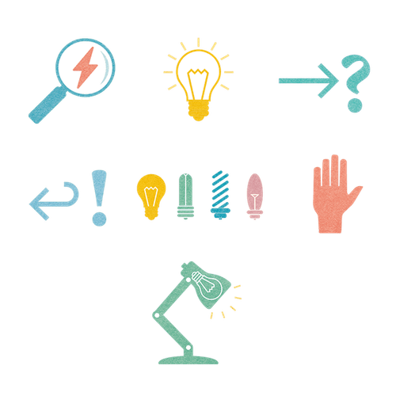

Many of Lufthansa Technik’s 4,500 employees were stuck in endless meetings. With 9 Spaces, they began building a more effective meeting culture.
Explore six non-awkward formats, methodsand exercises that help bring teams closer together.

A tool that helps you resolve tensions – no matter how difficult – in a way that works for everyone.